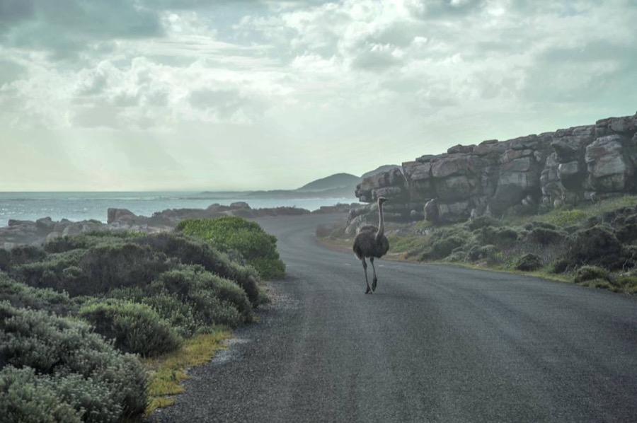

Son Köşe Yazıları
Türkiye'nin enerji geleceğinde nükleer yarış başladı!

Türkiye, elektrik üretiminde önemli bir eşiği aştı. Enerji ve Tabii Kaynaklar Bakanı Alparslan Bayraktar, eylül ayında üretilen elektriğin yüzde 70,3'ünün yerli kaynaklardan karşılandığını açıkladı. Eylül sonu itibarıyla toplam kurulu güç 127 bin 355 megavata, yenilenebilir enerji kurulu gücü ise 80 bin 315 megavata ulaştı.
Yazının başlıkları
-
01
Yapay zekâ elektriğin kurallarını değiştiriyor
18 Temmuz 2026'da yayımlanan “Yapay zekâ çağında rüzgâr ve güneş yeterli olacak mı?” başlıklı yazımda veri merkezlerinin hızla artan elektrik tüketimine dikkat çekmiş, yenilenebilir kaynakların tek başına yeterli olmayacağını ve nükleer enerjinin yeniden önem kazanacağını belirtmiştim.
-
02
Kanada Başbakanı ile nükleer santral görüşmesi…
Türkiye'nin gelecekteki enerji ihtiyacına yönelik arayışlarının son örneklerinden biri, Kanada Başbakanı Mark Carney'nin 22-23 Ekim'deki Türkiye ziyareti oldu.
-
03
Türkiye SMR yarışında nerede?
Dünyada nükleer enerji yarışı artık yalnızca büyük santrallerle sınırlı değil. SMR (Small Modular Reactor) olarak adlandırılan küçük modüler reaktörler ve MMR (Micro Modular Reactor) olarak bilinen mikro reaktörler yeni dönemin önemli teknolojileri arasında bulunuyor.
-
04
Füzyon enerjisinde büyük teknoloji yarışı
Nükleer enerjinin daha uzun vadeli geleceğinde füzyon teknolojisi bulunuyor. Bugünkü santraller atom çekirdeklerinin parçalanmasına, yani fisyona dayanırken, füzyon hafif atom çekirdeklerinin birleşmesiyle enerji elde edilmesini hedefliyor. ABD, Çin ve Avrupa bu alana büyük yatırımlar yapıyor.
-
05
Türkiye elektriğin geleceğini planlamalı
Yapay zekâ çağında Türkiye'nin enerji bağımsızlığı, elektriğin yüzde kaçını yerli kaynaklardan ürettiği kadar, nükleer teknolojilerde ne ölçüde söz sahibi olacağına, güçlü şebeke ve depolama altyapısıyla artan talebi ne kadar kesintisiz, güvenilir ve uygun maliyetle karşılayabileceğine bağlı olacak.
Aynı yazıdaki diğer konular

TAG kazandı, taksicilerin teknolojiye direnci kırılacak mı?
Türkiye'de taksi sektörünün dijital dönüşümüne karşı yıllardır devam eden dirençte önemli bir hukuki gelişme yaşandı. Martı TAG'a karşı İstanbul ve Antalya başta olmak üzere çok sayıda taksici esnaf odasının açtığı haksız rekabet davasında, istinaf mahkemesi TAG lehine karar verdi.
-
01
Antalya'da Uber'in nasıl değiştiğini gördüm
Geçtiğimiz günlerde Antalya'da düzenlenen 77. Uluslararası Uzay Kongresi sırasında Uber'i kullandım. Ancak karşılaştığım hizmet, dünyada Uber'in yaygınlaşmasını sağlayan farklı ulaşım deneyiminden oldukça uzaktı. Uygulama üzerinden çağırdığım araçlar mevcut taksi sisteminin parçasıydı.
-
02
Rekabet vatandaşa da ekonomiye de kazandırır
Uber, Martı TAG ve benzeri platformlar, araçların daha verimli kullanılmasına, boş kilometrelerin azaltılmasına, dijital ödemelerin yaygınlaşmasına ve ulaşım talebinin daha iyi yönetilmesine katkı sağlayabilir.
-
03
Taksicilik değil, vatandaş merkezde olmalı!
Türkiye'de taksi tartışmaları yıllardır plaka sahipleri, taksici odaları ve yeni ulaşım platformları arasında yaşanıyor. Oysa tartışmanın asıl tarafı, her gün taksi bulmaya çalışan, zaman kaybeden ve aldığı hizmetin bedelini ödeyen milyonlarca vatandaş.

Köprü ve otoyollar müteahhitlere mi kalacak?
Türkiye'nin altın yumurtlayan tavuklarından 15 Temmuz Şehitler Köprüsü, Fatih Sultan Mehmet Köprüsü ve Karayolları Genel Müdürlüğünün işlettiği otoyollar yeniden özelleştirme gündeminde. İşletme haklarının 30 yıllığına özel sektöre devredilmesi için hazırlıklar sürüyor.
-
01
Fransa'dan Çin'e herkes bu işin peşinde
Türkiye'nin köprü ve otoyollarına uluslararası yatırımcıların ilgisi büyük. Fransız Egis ve Meridiam gibi şirketlerin yanı sıra Çinli yatırımcıların da süreci takip ettiği belirtiliyor. Türkiye'den ise Limak, Cengiz Holding, IC İçtaş, Kalyon ve Makyol gibi altyapı şirketlerinin isimleri konuşuluyor.
-
02
Fransa denetliyor, Japonya hizmeti çeşitlendiriyor
Fransa'da otoyolların büyük bölümü uzun süreli imtiyaz sözleşmeleriyle özel şirketler tarafından işletiliyor. Bakım, güvenlik, yatırım ve ücretlendirme yükümlülükleri sözleşmelerle düzenlenirken, ART adlı bağımsız düzenleyici de ekonomik denetim yapıyor.
-
03
ABD'deki 3,8 milyar dolarlık özelleştirme neden çöktü?
Yüksek teklifin başarı garantisi olmadığının örneklerinden biri ABD'deki Indiana Toll Road. Yaklaşık 253 kilometrelik otoyolun işletme hakkı 2006'da 75 yıllığına 3,8 milyar dolara devredildi.
-
04
Türkiye 5,7 milyar dolarlık teklifi kabul etmemişti
Türkiye'de 2012 yılında Koç Holding-UEM Group Berhad-Gözde Girişim Sermayesi ortaklığı, 25 yıllık işletme hakkı için 5 milyar 720 milyon dolarla en yüksek teklifi verdi. Ancak teklif düşük bulunarak ihale 2013'te iptal edildi. Aradan geçen yaklaşık 14 yılda trafik hacmi, araç sayısı ve ekonomik şartlar değişti.
-
05
İhalede işletmecilik öne çıkmalı
Türkiye'nin bu özelleştirmede dikkat etmesi gereken en önemli konu ihale şartnamesinin işletmecilik kriterleri üzerine kurulması. Şirketlerin kaç kilometre otoyol inşa ettiklerinden çok, kaç kilometre otoyolu hangi hizmet kalitesiyle işlettiklerine bakılmalı.
-
2026.10.26
KAAN, HÜRJET VE HÜRKUŞ iniş takımları Altınay'dan…
Türkiye'nin savunma sanayiinde son yıllarda yakaladığı başarıda genellikle savaş uçakları, insansız hava araçları, helikopterler, füzeler ve savaş gemileri öne çıkıyor.
-

Yapılamaz dendi Türkiye’de geliştirdi
Hakan Altınay ile sohbetimizde en dikkat çekici konulardan biri, Türkiye’nin beşinci nesil savaş uçağı KAAN için geliştirilen kritik bir alt sistem oldu.
-
Havada, denizde yeni sistemler
Altınay’ın savunma sanayiindeki faaliyetleri yalnızca havacılıkla sınırlı değil.
-

Hedef dünyanın en büyük 100’ü arasına girmek
Altınay Savunma Grubu CEO’su Z.
-
Neden İngiltere’de şirket kuruldu?
Mercan, uluslararası büyüme stratejisinde İngiltere’nin özel bir yeri olduğunu anlattı.
-
DASAL’ın İHA’ları görevde
Altınay Savunma bünyesindeki DASAL Havacılık Teknolojileri, insansız hava sistemleri alanında faaliyet gösteriyor.
-
Türkiye’nin ilk sanayi robotuna imza attı
Hakan Altınay’ın anlattığı kuruluş hikâyesi de dikkat çekiciydi.
-
1974’te biriktirilen pullardan KAAN’a
Hakan Altınay’ın anlattığı bir çocukluk hatırası, Türkiye’nin havacılık sanayiindeki dönüşümünü özetliyor.
-
Batarya teknolojilerinde yeni hedef
Altınay’ın savunma dışındaki teknoloji yatırımlarından biri de enerji depolama alanında.
-

Tarım robotu İtalya’da görücüye çıkacak
Altınay’ın robotik birikimini aktardığı yeni alanlardan biri de tarım.
-
Yerli elektrikli motosiklet
Altınay Grubu’nun yeni yatırımlarından biri de Actio Ulti elektrikli motosikleti.
-

Tuzla’ya 55 milyon dolarlık teknoloji kampüsü
Altınay’ın önümüzdeki dönemdeki önemli yatırımlarından biri de İstanbul Tuzla’da kurulmakta olan Teknoloji Kampüsü.
-

Platform kadar alt sistem de önemli
Hakan Altınay, Z. Burak Mercan ve Enis Ata ile yaptığımız görüşmeden çıkan en önemli sonuç, Türkiye’nin savunma sanayiinde ulaştığı seviyenin artık yalnızca nihai platformlar üzerinden değerlendirilmemesi gerektiği…
-
-
2026.10.22
Selçuk Bayraktar uzayda neyin peşinde?
Türkiye'nin uzay çalışmaları artık farklı bir nitelik kazanıyor.
-
Uluğ Bey ile hedeflenen bağımsızlık
Fergani’nin hedefi, Uluğ Bey adı verilen küresel konumlama sistemini kurmak.
-
Dünyada yarış kimler arasında?
Konumlamada küresel oyuncular belli: ABD’nin GPS’i, Avrupa Birliği’nin Galileo’su, Rusya’nın GLONASS’ı ve Çin’in BeiDou’su.
-
Uzayda taşıma işi de var
Roketin uyduyu uzaya çıkarması, uydunun istenen yörüngeye ulaştığı anlamına gelmiyor.
-
Takvimde kritik eşik 2030 mu?
Ocak 2025'te açıklanan “beş yılda 100'ün üzerinde uydu” hedefi, 2030'u işaret ediyor.
-
Türkiye bu işlerden ne kazanacak?
İlk kazanım, uzayda denenmiş mühendislik birikimi.
-

KKTC’de fibere bir adım kaldı
Kuzey Kıbrıs Türk Cumhuriyeti’nde (KKTC) uzun süredir beklenen fiber internet altyapısında önemli bir aşamaya gelindi.
-
KKTC için stratejik yatırım
Türkiye’nin KKTC’ye yönelik altyapı yatırımlarını birbirinden bağımsız değerlendirmemek gerekiyor.
-
Asıl mesele fiberin eve ulaşması
Temmuz 2025'te Lefkoşa’da, projenin KKTC’nin dünyayla dijital entegrasyonu açısından önemli bir adım olacağını yazmıştım.
-

THY'den Business Class yolcularına 5 yıldızlı restoran!
Türk Hava Yolları (THY), İstanbul Havalimanı’ndaki özel yolcu salonlarında hizmet anlayışını bir üst seviyeye taşıyacak yeni bir uygulamaya hazırlanıyor.
-
Peki, THY bu yatırımdan ne kazanacak?
Havayollarının en fazla gelir elde ettiği yolcu gruplarından biri Business Class yolcuları.
-
TV Yayınları — Airport
Gökyüzü rehberiniz Airport, sizi dünyanın kapılarını aralamaya davet ediyor — 1998'den bu yana her Pazar 12:15'te Habertürk TV ekranlarında. Son 4 hafta:

SmartWings Neden Satın Alındı?

Geleceğin Uyduları Nasıl Olacak?

Türkiye'de Sanat Nasıl Geliştirilir?

Türkiye'deki Havayolları İle İşbirliği Yapılıyor Mu?

Turizmde 2026 Hedefi Değişti Mi?

Havacılıkta Hangi Alanlar Öne Çıkacak?

100 Milyon Turist, 120 Milyar Dolar Gelir Mümkün Mü?

Havalimanları Nasıl Akıllı Yaşam Alanı Olacak?

Kaşıkçı Elması'nı Nasıl Tanıttı?

Türkiye'deki Hastanelerin Yetkinlikleri Ne Durumda?

Emekliye Ayrılan Efsane Uçaklar

HÜRJET, NATO Uçağı Mı Oluyor?

Yeni Nesil Uçaklarda Hangi Özellikler Standart Olacak?

Balistik Füzeler Neden Önemli?

Silahlı Kuvvetlere Ürün Geliştirmenin Şartları Neler?

Ortadoğu Krizi Havacılığı Nasıl Etkiledi?

IATA'nın Çalışmaları Ve Hedefleri Neler?

THY'nin 2033 Büyük Planı: Havacılıkta Yeni Bir Çağ Mı Başlıyor?

Özbekistan Havayolları'nın Türkiye Planları Neler?

Simülatör Üretiminde Havelsan'ın Konumu Nedir?

Dünya Bu Teknolojiler İçin Sırada: SAHA EXPO'da İmzalar Atıldı!

Hava Taksiler Hizmet Verecek Mi?
Bloomberg HT
Bloomberg HT'nin Türkiye'de yayın hayatına başlamasından bu yana, her Perşembe 16:00–17:00 saatleri arasında yorumcu olarak ekranda yer alıyor; havacılık, ulaşım, enerji, savunma sanayii, teknoloji ve telekomünikasyon alanlarındaki güncel gelişmeleri değerlendiriyor.
- 2026.07.02Finans Merkezi — Depozitolu Ambalaj Uygulaması Başladı, Hangi Ürünleri Kapsıyor?
- 2026.06.12THY'de bölgesel jet gündemi
- 2026.04.30Finans Merkezi — Havayollarında Jet Yakıt Alarmı
- 2023.03.02Turkcell'in iştiraki Lifecell Barcelona'da ödül aldı
- 2023.02.23GSM operatörleri afette ulusal roaminge geçiş için test yapmadı
- 2023.01.19Finans Merkezi — Türkiye-ABD Stratejik Mekanizması Hakkında Ortak Açıklama
- 2022.07.28Finans Merkezi — Avrupa gaz krizine çözüm arıyor
- 2022.03.21Finans Merkezi — EÜAŞ'ın elektrik alım ihale süreci
Fotoğrafları
Güntay Şimşek'in fotoğrafla ilişkisi 80'li yılların başına kadar uzanıyor. İlk fotoğraf makinesiyle Bursa Otelcilik ve Turizm Lisesi'nde okurken 1982 yılında tanıştı. Gençlik yıllarından itibaren de yolculuklarını, karşılaşmalarını ve gözlemlerini görüntülerle kaydetti. Lise, üniversite ve gazetecilik döneminde hayatında hep fotoğraf oldu. Fotoğraf makinesiz seyahat etmedi. Bu sebeple Güntay Şimşek fotoğrafları yalnızca "gören" bir gözün değil; aynı zamanda "kaydeden, düşünen ve tanıklık eden" bir zihnin izlerini taşır.
Fotoğraflarından bir seçki.
Eşik; İki Dünya Arası. Ara Hal Ara Zaman fotoğrafları → guntaysimsekphoto.com